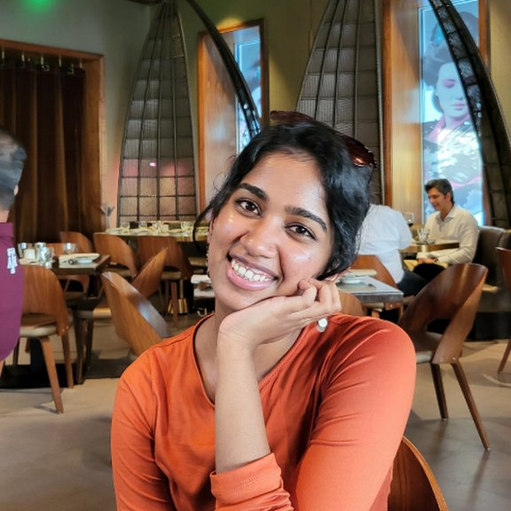

Selected Work

↗

↗
↗


↗

↗
PRODUCT DESIGN ENGINEER turning ambiguity into direction

Featured Work — hover to flip
i believe good products don't just solve problems.
they reveal ones people didn't know they had.
all of my work has been about closing the gap between what people do and what they actually need.
with AI and personalization, that gap gets smaller.
but the real work is still human: listening, framing, building things that help people move forward.
these days i'm a design engineer. vibe coding with Cursor, Claude, and Gemini. at JPMC i shipped a standardized atomic design template that cut 3 sprints off marketing velocity.
i bring people together and present really well.
let me show you ↗Selected Work
These designs are live on chase.com/personal/mortgage. Hover each section to see the design decision behind it.
Emotional trust before product detail
Led with emotional reassurance first. The on-time closing guarantee handles commitment anxiety before the customer raises it.
Most-desired content moved to top
Rates were the #4 click, buried 3 scrolls down. Surfacing them immediately removed the affordability anxiety causing drop-off.
Goal-first, not product-first
Old structure organized by product. New structure starts with customer intent. We also pushed hard to modernize the design stack — championing a redesigned rates page and calculators that actually served customer needs first.
Digital-first, human when needed
Customers want to self-serve but need a safety net. HLA access answers "what if I have questions?" before they have to ask.
Value before asking for anything
Calculators answer "can I afford this?" without Chase needing any data first. Part of our push for a modern design system that let us actually ship these components properly.
From 20+ CTAs to a clear hierarchy
Previous design had 20+ CTAs creating paralysis. New design has two paths: act or explore. Every CTA ladders to one of those two outcomes.